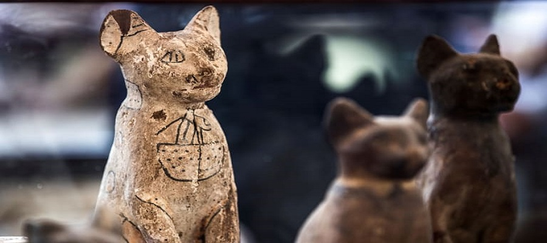
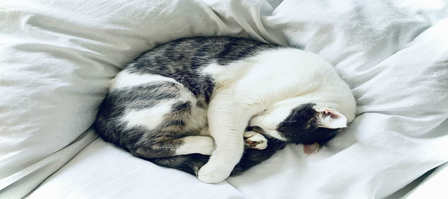
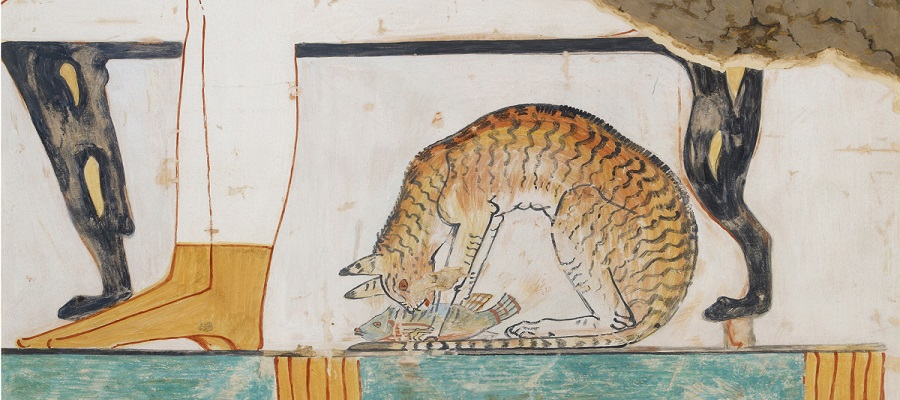
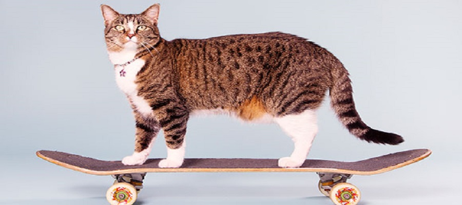

This interesting fact about cats is guaranteed to wow at your next dinner party. Did you know that originally it was thought that Egyptians domesticated the cat? But in 2004, French archaeologists discovered a 9,500 year old cat grave in Cyprus. This makes this the oldest known pet cat and it predates Egyptian art about cats by over 4,000 years!
If you thought cats spent a lot of their lives sleeping, you’d be right. According to Veterinary Hub, Cats actually spend 70% of their lives sleeping, which works out to around 13-16 hours a day. It’s a cat’s life!
An orange tabby cat called Stubbs was the mayor of Talkeetna, a small town in Alaska for 20 years! He had several uncontested elections and although he didn’t hold any legislative power, he was loved by locals and tourists alike.
Domestic cats are usually considered to be quite small and dainty creatures. But did you know the world’s longest cat was a Maine Coon called Stewie, and was measured at 48.5 inches? Whereas, the record for the tallest cat belonged to Arcturus at a whopping 19.05 inches tall! Those are some big cats.
The richest cat in the world according to Guinness World Records is Blackie. When his millionaire owner passed away he refused to recognise his family in his will and instead gave his 7-million-pound fortune to Blackie! We can’t believe that interesting cat fact!
Have you ever noticed that cats walk like camels and giraffes? Their walking sequence is both right feet first, followed by both left feet, so they move half of their body forward at once.
The scientist is most famous for calculated gravity, but it’s also believed that Isaac Newton invented the cat door. How Stuff Works writes that when Newton was working on his experiments at the University of Cambridge he was constantly interrupted by his cats scratching at the door. So he called the Cambridge carpenter to saw two holes in the door, one for the mother cat and one for her kittens! Apparently these holes can still be seen at the university today.
You’ve heard of monkeys and dogs in space, but did you know that a cat braved the great unknown too? On October 18th 1963 Felicette, also known as ‘Astrocat’ was the first and only cat to go to space.
According to Ancient History Encyclopedia, Herodotus wrote in 440BC that when a pet cat died in Ancient Egyptian times the family members would shave off their eyebrows in mourning. Now that’s an interesting cat fact!
This cat fact will really blow your mind. A study discovered that our little house cats share 95.6% of their genetic makeup with tigers! They also share a lot of the same behaviours such as scent and urine marking, prey stalking and pouncing.
If you’ve watched your little kitty charging around the living room when they’re feeling lively you know that cats are pretty quick, but you won’t believe this cat fact. They can hit speeds of around 30mph which is so fast that they could beat Usain Bolt in a 200-metre dash!
The oldest cat to have ever lived was 38 years and 3 days old when he passed away. Creme Puff, born on 3rd August 1967 lived until 6th August 2005, and his owner Jake Perry also owned the previous oldest cat record holder, Grandpa Rex Allen, who passed away at the grand age of 34! Whatever Jake Perry’s doing, he’s doing it right!
The record for the loudest purr by a domestic cat is currently held by Merlin, a black and white cat from Torquay, UK. His purr is 67.8db(A) and for context, this is nearly the same volume as a shower! Most cats purr at around 25db.
If you think cats can’t do tricks, then you’ll be shocked to learn this cat fact. The most tricks performed by a cat in one minute is 24! Didga completed a series of tricks from rolling over, to even jumping a bar whilst on a skateboard!
